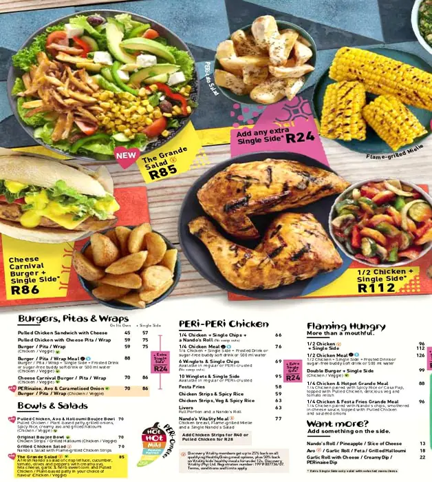
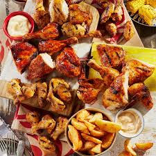
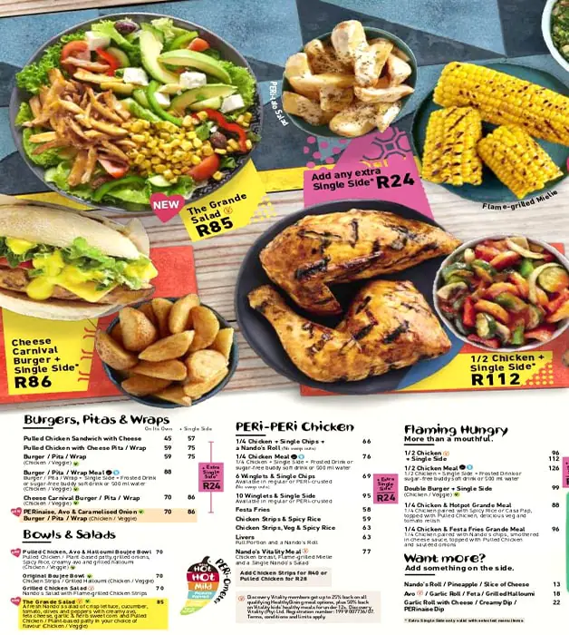
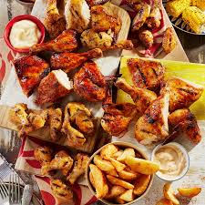

NANDOS
The restaurant was founded in 1987 in the Johannesburg suburb Rosettenville, by Mozambique-born Fernando Duarte and South African-born Robert Brozin. Upon visiting a Colonial Portuguese-African[3] takeaway named Chickenland, and trying the chicken with peri peri (a sauce that was first developed in nearby Mozambique and further refined in South Africa